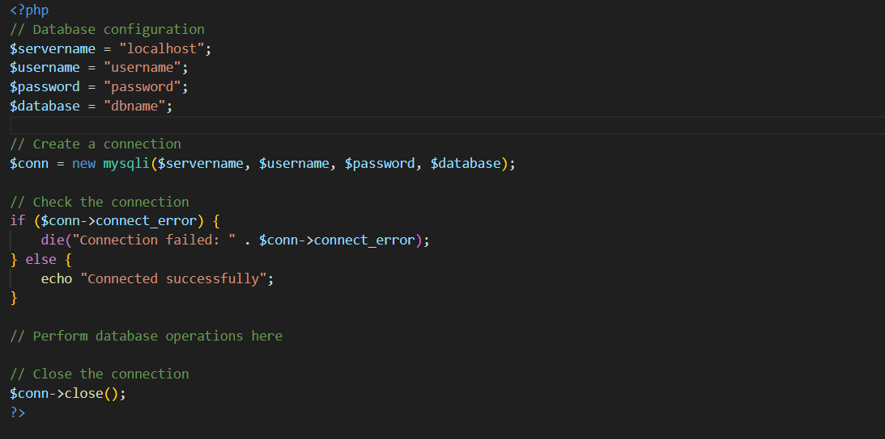
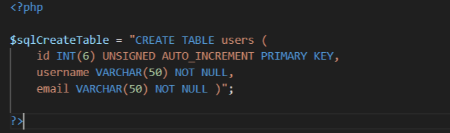
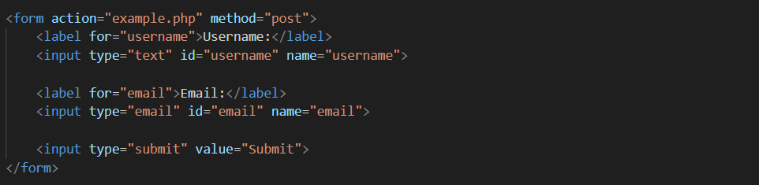

PHP database connectivity refers to the process of establishing a connection between a PHP script and a database server. It allows PHP applications to interact with databases by executing SQL queries. This interaction enables tasks like retrieving, inserting, updating, and deleting data in the database. Secure coding practices are essential to prevent security vulnerabilities such as SQL injection attacks.
Certainly! To connect to a MySQL database using PHP, you can use either the MySQLi (MySQL Improved) extension or PDO (PHP Data Objects).
You can use SQL queries to create databases and tables. For example, to create a database named "mydb" and a table named "users," you can execute SQL statements like:
You can retrieve data from the database using queries and fetch methods provided by MySQLi or PDO. For example:
You can create forms to collect user data and then use PHP to validate and store that data in the database. Here's a simplified example:
